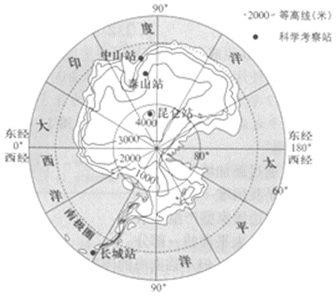
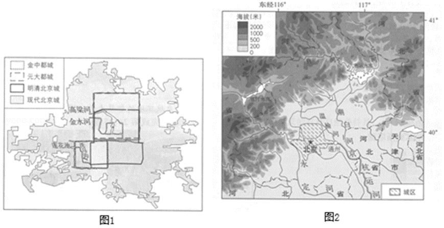
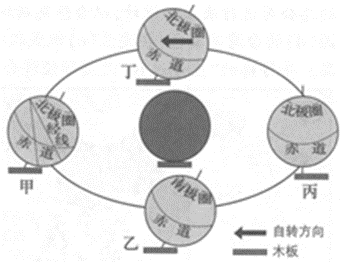

2018年北京市中考地理真题 · 选择题 第36、37、38、39、40题

2018年我国春节联欢晚会上，主持人宣读了来自我国科学考察队员的祝福。如图为南极大陆等高线地形图。读图，完成35～37题。36.南极大陆（ ）
A.地形以高原为主B.大部分海拔在2000米以下
C.南极点为海拔最高点D.纬度最高的科考站是泰山站
37.南极科考是为了（ ）
A.探索和保护丰富的森林资源

B.今后向南极大量移民做准备C.开发这里的矿产资源
D.开展对特殊自然环境的研究
-------------在--------------------此--------------------卷--------------------上--------------------答--------------------题--------------------无--------------------效------------

某同学用乒乓球、木板、铁丝等物品制作简易模型演示地球的运动。如图是其制作前绘制的演示简图。读图，完成38～40题。38.图中（ ）
毕业学校_____________ 姓名_____________ 准考证号_____________ ____________________________________________________
A.中心深色乒乓球表示地球B.四个浅色乒乓球表示太阳
C.大的椭圆形表示地球自转轨道
D.固定在木板上的铁丝表示地轴
39.演示简图中有些错误，正确的调整是（ ）
A.将甲处乒乓球上的经线改为平行线
B.把乙处乒乓球上“南极圈”改为“北极圈”
C.把所有乒乓球倾斜方向调整为与丙处一致
D.将丁处乒乓球所标自转方向改为反方向
40.演示地球运动的正确操作是（ ）
A.在轨道上移动而不转动乒乓球，演示的是地球的自转和公转
B.按甲→乙→丙→丁的顺序沿着轨道移动乒乓球，演示地球的公转
C.按甲→丁→丙→乙的顺序沿着轨道移动乒乓球，演示地球的自转
D.拨动丁处的乒乓球，使其沿着箭头方向转动，演示地球的自转